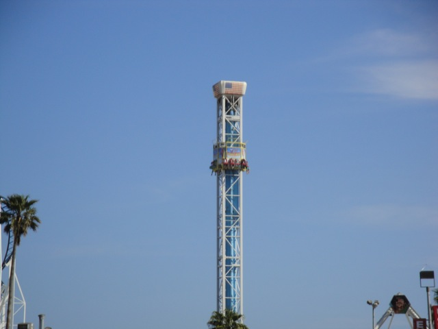
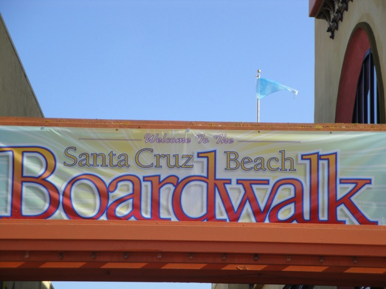
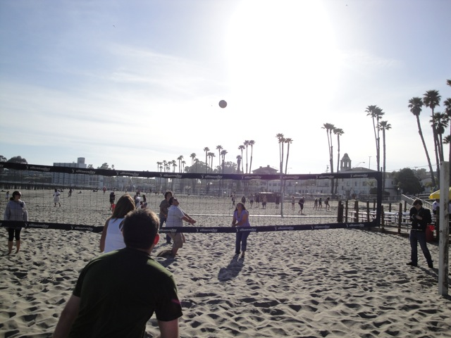
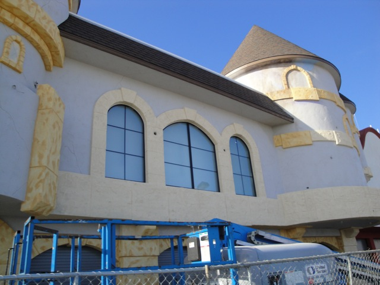
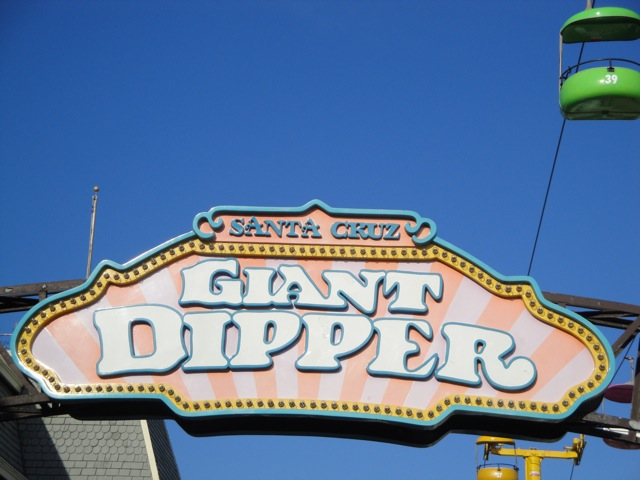
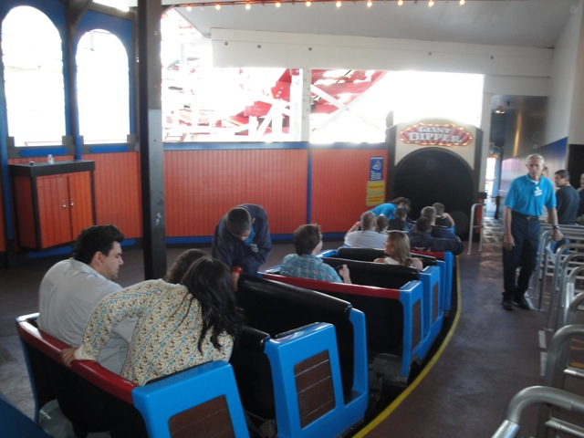
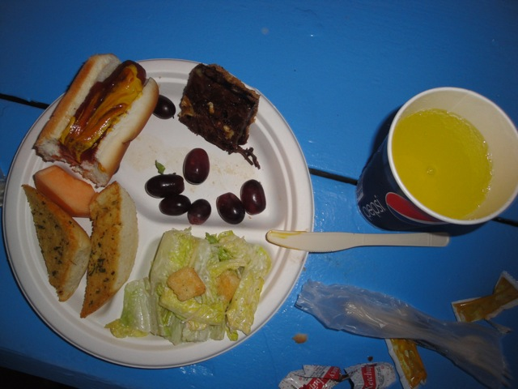

Bay Area Bash 2010
Santa Cruz Beach Boardwalk Six Flags Discovory Kingdom California's Great America
Well, the day has come. Incrediblecoasters is heading back to the Bay Area after 4-5 long years. And we headed up in style on the Party Bus.
Sorry SFMM. We love visiting you and all, but we have better things to do today.
Like ask Robb a question.
 I can't ask Robb a question if I cut my own tounge off with this TPR Fan. ;)
I can't ask Robb a question if I cut my own tounge off with this TPR Fan. ;)
 Welcome to the Middle of nowhere.
Welcome to the Middle of nowhere.
Mountain Dew + Crystal Light = Awesome!!
"Where the hell am I?"
 Luckily, we at Incrediblecoasters and Themeparkreview are proffesional dust bowl stoppers and managed to stop the Costa Pelosi Cardoza Dustbowl.
Luckily, we at Incrediblecoasters and Themeparkreview are proffesional dust bowl stoppers and managed to stop the Costa Pelosi Cardoza Dustbowl.
Well at least we were introduced to It's It here. (It's actually pretty good.)
Just another 3 hours and we have reached our bonus park.
Which is the Santa Cruz Beach Boardwalk. (Though you already knew that if you read the links at the top of the page. Unless you are illiterate. But if you're illiterate, then you can't read this caption and tell where we are.)
Unfortunetly, Hurricane was only open to a Grad Night in Santa Cruz.

Same goes for Double Shot. But oh well.

We have two hours of Giant Dipper ERT and dinner. Take that Grad Night!
Well, we had an hour before our Giant Dipper ERT began.
Have fun on the Hurricane Grad Night Students. If you need us, we'll be at Giant Dipper.

Coaster Enthusiasts can't play Volleyball.

Here's a little sneak peek at the Haunted Castle Construction.

ERT has begun!!!
Since I was 8 when I last rode this, I don't remember a damn thing about the Santa Cruz Giant Dipper.

Now this is how ERT should be.
 Let's see how the Giant Dipper is.
Let's see how the Giant Dipper is.
 Dude! Giant Dipper kicks ass!!
Dude! Giant Dipper kicks ass!!
 This ride had airtime and laterals wherever you went.
This ride had airtime and laterals wherever you went.
Who needs onride photos when this picture shows you our facial expressions during the Giant Dipper.
That's enough photographing and filming. I'm staying on this baby for the rest of ERT.
This is what 17 rides on the Giant Dipper does to your hair.
All right! Dinner time!
They gave us a buffet of great food.
And unlimited soda as well!!! And they had an open bar where a certain friend of a certain talking goose had a little too much to drink.

The food was quite awesome.
 The Santa Cruz Beach Boardwalk at night.
The Santa Cruz Beach Boardwalk at night.
That night, we stayed at the Avatar Hotel, which had these awesome pictures in the rooms.
Six Flags Discovory Kingdom
Home